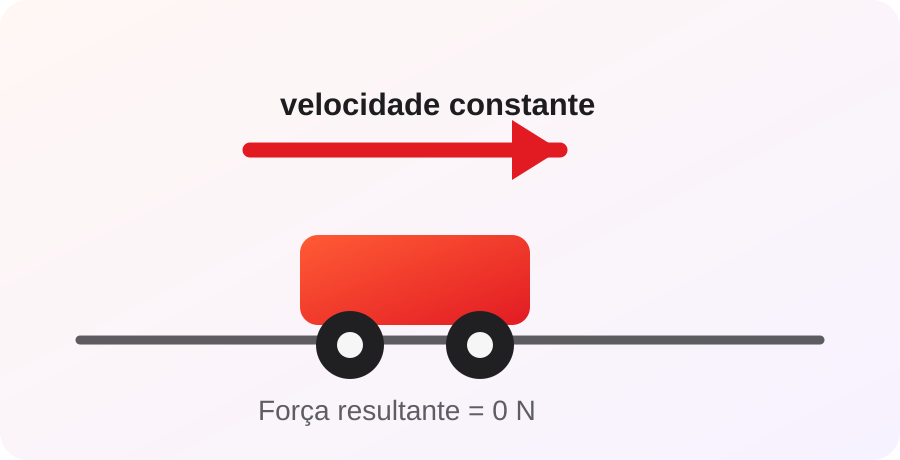

1ª Lei — Princípio da Inércia
Um corpo tende a manter seu estado de repouso ou de movimento retilíneo uniforme quando a força resultante sobre ele é igual a zero. Isso significa que não é necessária uma força contínua para manter um objeto em movimento com velocidade constante; a força resultante é necessária para modificar sua velocidade.
O que é inércia?
Inércia é a resistência de um corpo a mudanças em seu estado de movimento. Quanto maior a massa, maior é a dificuldade de alterar rapidamente sua velocidade. Por isso, parar um caminhão em movimento exige condições muito diferentes das necessárias para parar uma bicicleta.
